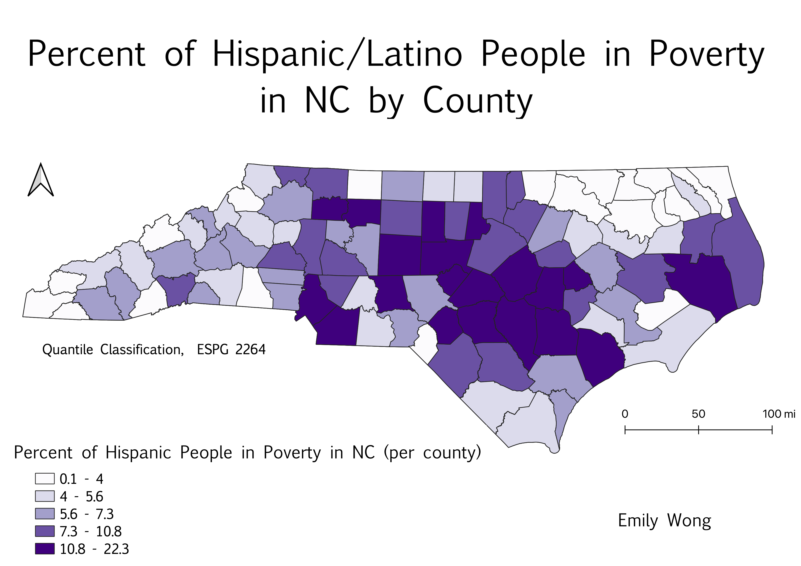
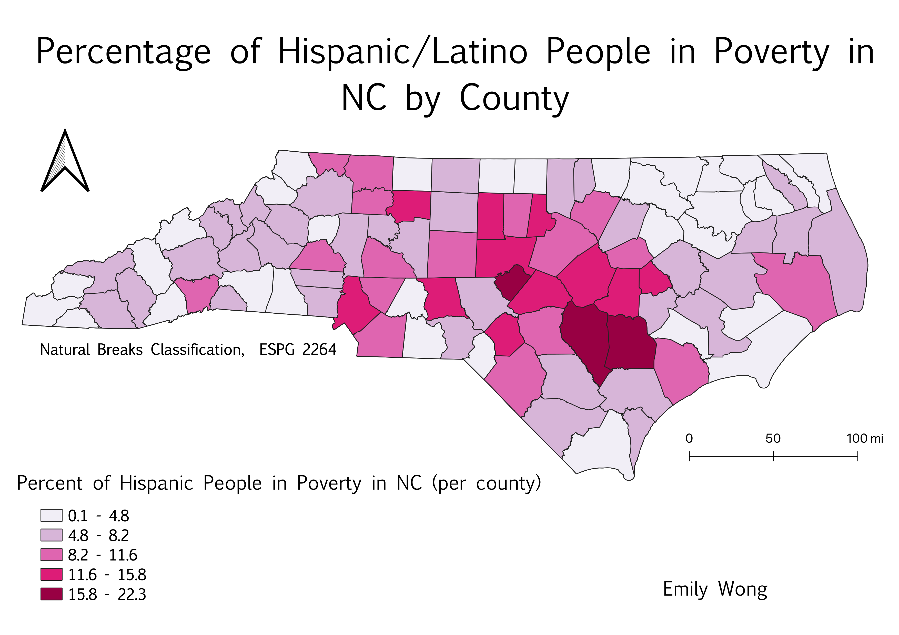

Percent of Hispanic People in Poverty in NC (2019 ACS Census Data)
I obtained this data from the 2019 ACS data on poverty in the United States. Specifically, I focused on the number of people in poverty in North Carolina counties. The data set included the amount of people in poverty by race or ethnicity by county. Using this data, I divided the number of Hispanic people in poverty in NC by the total number of people in poverty in NC to create my ratio. This ratio is useful for determining the different percentages of Hispanic people in North Carolina for each county, and comparing these percentages across the state..
Quantile Classification:
This map is using a quantile classification, which is useful for showing rankings. In this example, the quantile classification makes sure that there are approximately the same amount of counties within each percentage range, which presents a majority of the counties from being put in the same percentile range, which may make the map more difficult to interpret. Quantile classification allows for the data to be more equally distributed across the range of data.

Natural Breaks Classification:
This map is using natural breaks classification, which is useful for grouping the data into real classes based on the trends in the data. This groups similar classes together and then attempts to maximize the differences between data. For this map, natural breaks is useful for depicting how many counties fall into each percentiles, as well as putting the counties into categories that best apply to the mean of the data. This classification is good at grouping similar values together.

Equal Interval Classification:
This map was made using equal interval classification. This means that the percentile ranges were divided into equal categories, in this case, each category contained approximately 4.5%. This classification does not really consider how the data is distributed over the data range, and so the majority of the counties appear the first two shades of orange; however, if you compare this map to the quantile classification map, that map had many more counties in the largest category (the dark purple). Equal interval can be good for data sets that are evenly distributed across the data range, but in this example it makes the data slightly harder to interpret, because so many of the counties are in the same categories.
Data Links:
Cleaned CSV on GitHub
NC geoJSON on GitHub